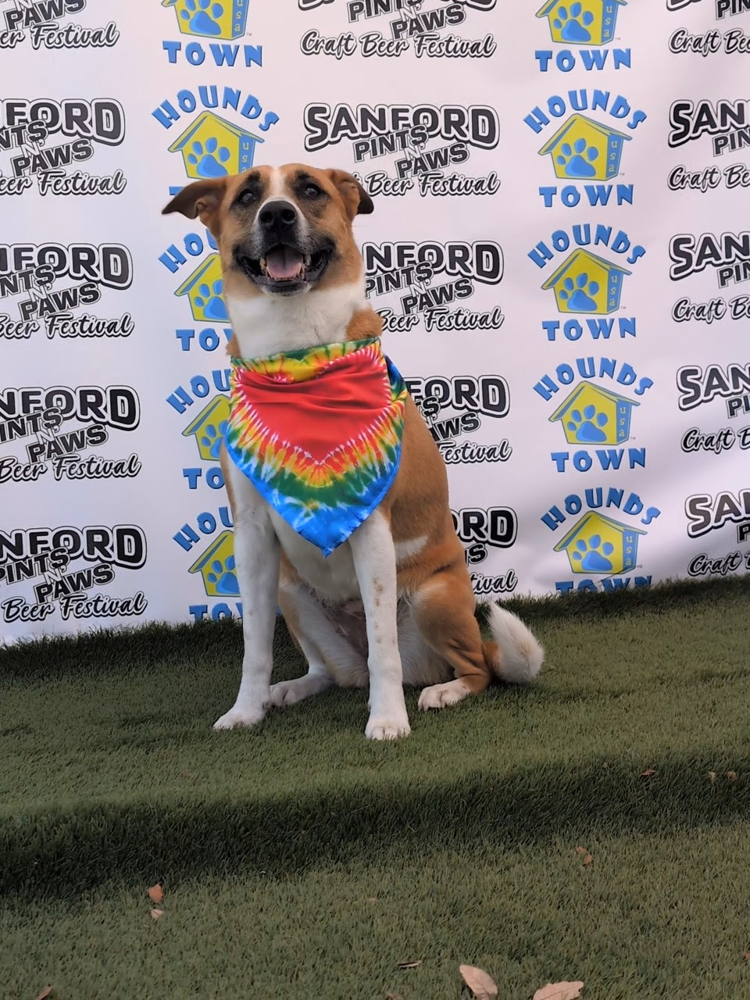
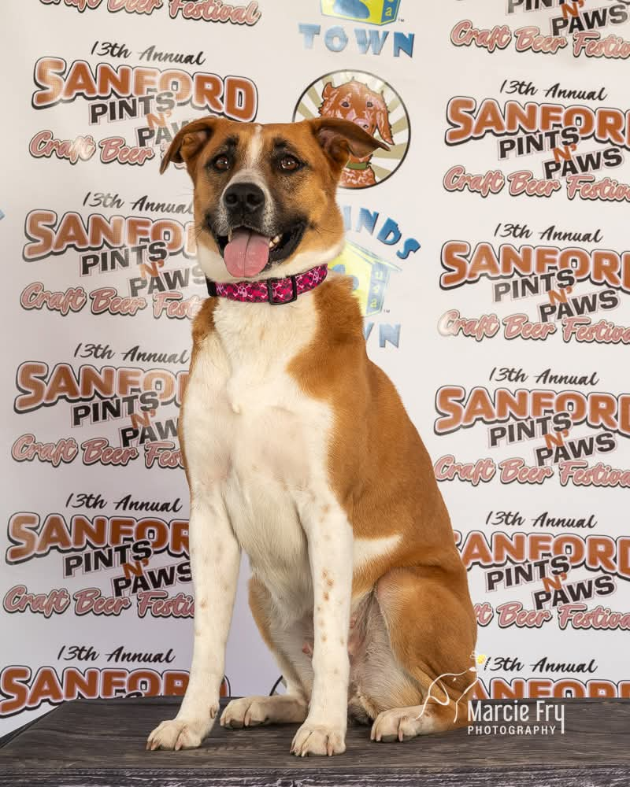
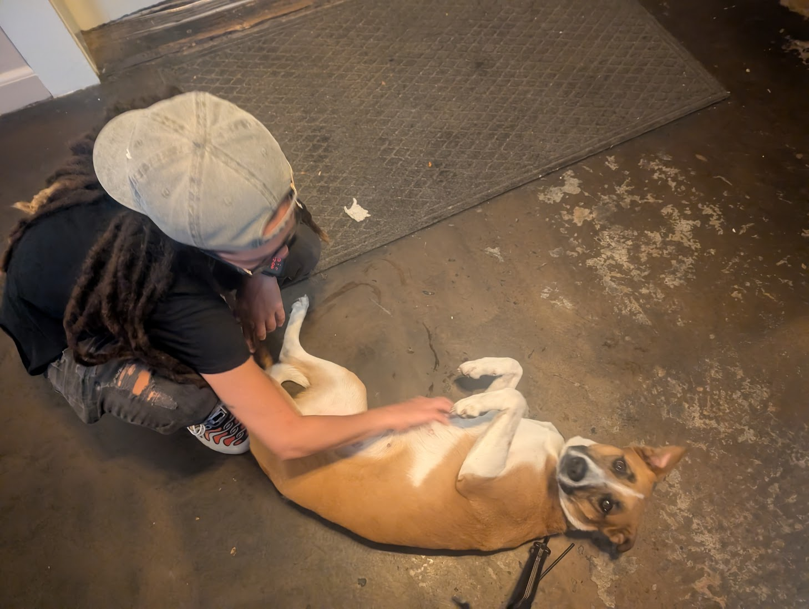
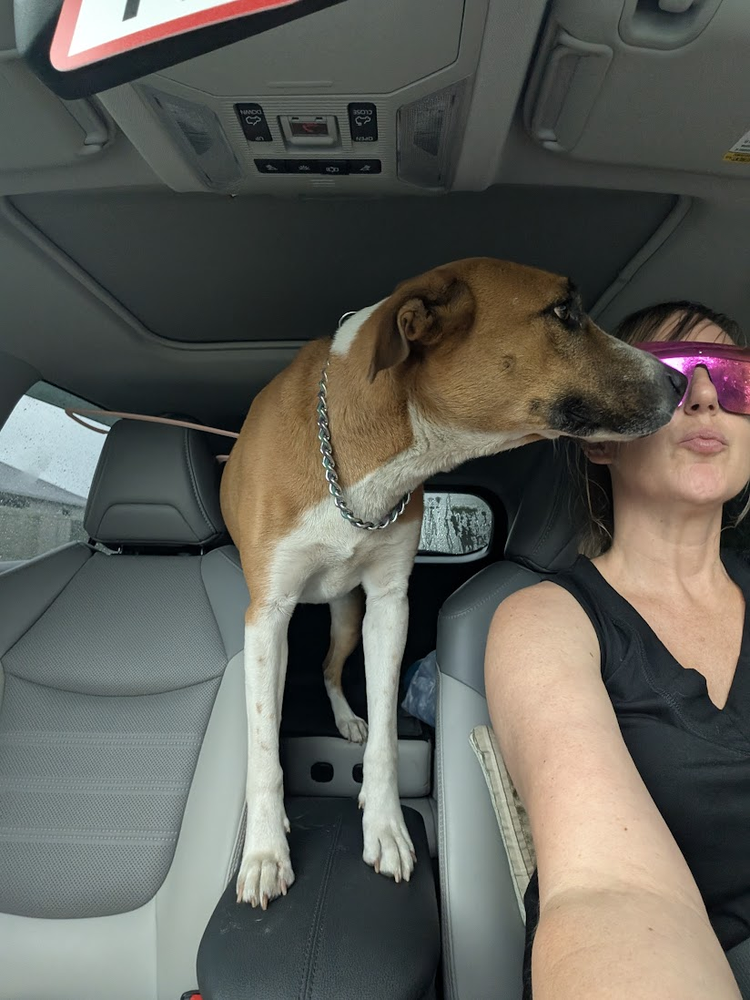
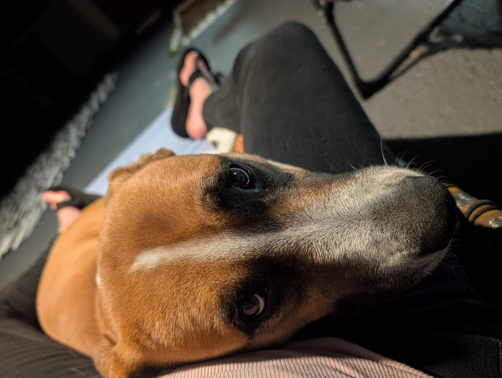

Rescue dog · Forever home
Mac and Cheese
A warm heart, a silly name, and a story worth telling. This page is for everyone who loves second chances.

Meet Mac
Mac and Cheese is a rescue dog with a personality bigger than her name. Replace this paragraph with breed or mix, age, and the shelter or rescue you want to thank—share only what feels right.
She found her people, and they found her. The rest is what this page is about.
The rescue story
Every rescue has a before and an after. Here’s the short version—edit with care and honesty.
-
Before
Placeholder: where Mac came from and what she needed—without sensationalizing hardship.
-
The turning point
Placeholder: the day everything changed—meet, foster, adoption, or transport.
-
Home
Placeholder: what “home” means now—stability, love, and room to be a dog.
Life now
The good stuff: routines, quirks, and the small joys of every day.
- Favorite toy, walk, or nap spot — placeholder
- Funniest habit — placeholder
- How she shows love — placeholder
— days in her forever home (optional)
Gallery
Moments worth saving—Mac and Cheese in everyday life. Edit captions below if you like.





Thanks for being here
Follow along with Mac and Cheese on Facebook for more photos and updates—or share this page with someone who loves rescue dogs.